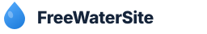

Community-powered water access
FreeWaterSite maps free drinking water worldwide, runs water stations at events, and builds permanent access points where communities need them most. We're volunteer-run. Every dollar goes directly to the mission.
100% of donations fund water access directly — zero overhead, zero salaries.